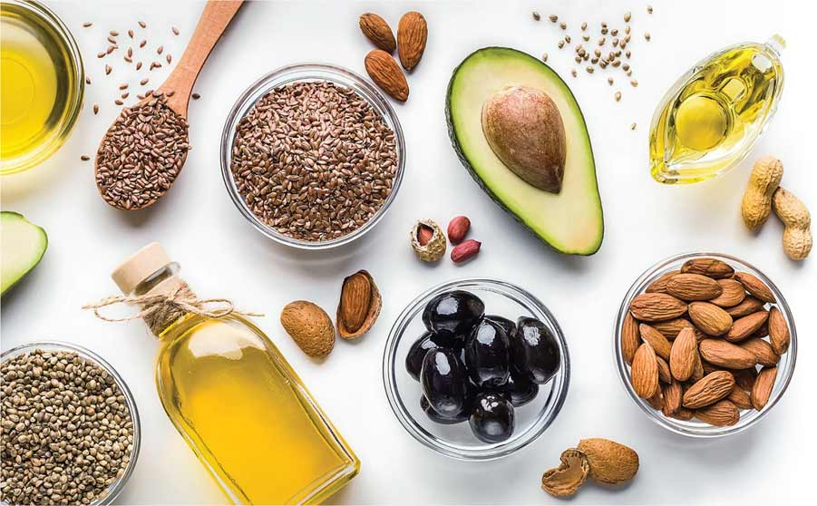
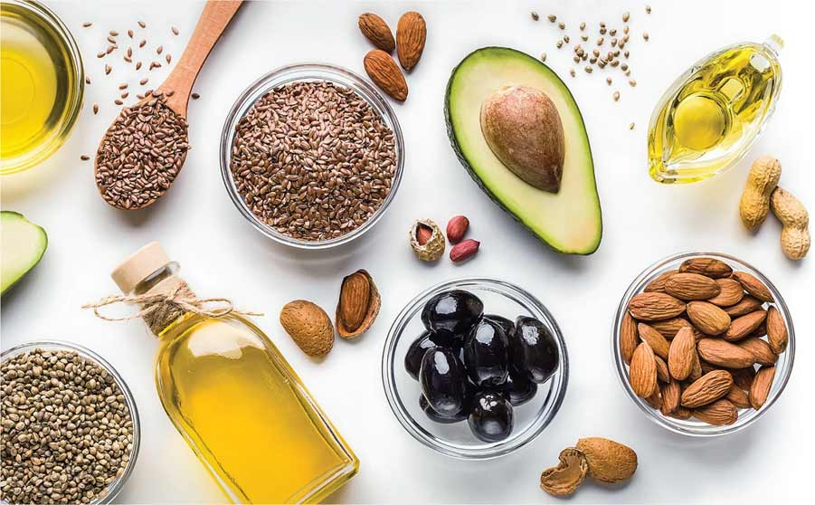

Điều gì sẽ xảy ra nếu cơ thể sinh vật bị thiếu nước kéo dài ?
Khi thiếu nước kéo dài sẽ làm chậm quá trình chuyển hoá các chất trong tế bào do thiếu nguyên liệu và môi trường cho các phản ứng hoá học cơ thể không duy trì được các hoạt động sống và có thể dẫn đến chết.
Tại sao khi bị nôn, sốt cao, tiêu chảy, chúng ta cần phải bổ sung nước bằng cách uống dung dịch oresol
Oresol là dung dịch có thành phẩn chủ yếu là nước và các chất điện giải (các muối khoáng). Khi bị nôn, sốt cao, tiêu chảy sẽ làm cho cơ thể bị mất một lượng lớn nước và các chất điện giải. Vì vậy, uống dung dịch oresol có tác dụng bù lại các chất này cho cơ thể.
Khi một người được cung cấp thiếu hoặc thừa nhiều chất dinh dưỡng hơn nhu cầu cơ thể cần có thể xảy ra hiện tượng gì? cần làm gì để khắc phục những vấn đề trên?
- Khi cơ thể được cung cấp thiếu nhiều chất dinh dưỡng trong thời gian dài dễ gây còi xương, suy dinh dưỡng làm ảnh hưởng lớn đến sự phát triển cơ thể, đặc biệt là ở trẻ em.
- Khi cơ thể được cung cấp dư thừa chất dinh dưỡng so với nhu cầu thì dễ gây thừa cân, béo phì là nguyên nhân của nhiều bệnh nguy hiểm như tim mạch, tiểu đường…
- Để khắc phục những vấn đề trên thì trong ăn uống cần chú ý xây dựng khẩu phần ăn hợp lí, cân bằng các chất dinh dưỡng, đa dạng loại thức ăn… phù hợp với điều kiện kinh tế.
Tại sao chúng ta cần phải ăn nhiều loại thức ăn khác nhau ?
Mỗi chất dinh dưỡng có vai trò khác nhau trong cơ thể nên cần ăn đa dạng các loại thức ăn để đảm bảo cung cấp đầy đủ chất dinh dưỡng.
Những loại thức ăn khi kết hợp với nhau sẽ có lợi
 
